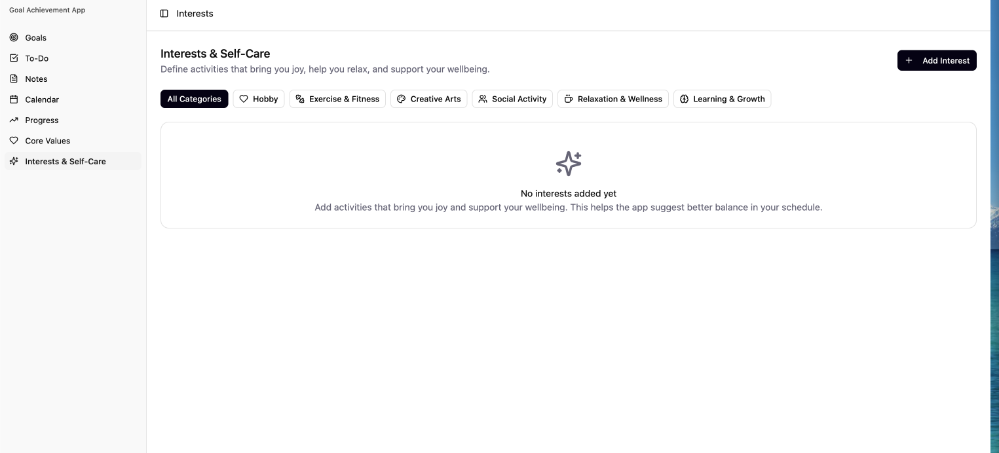
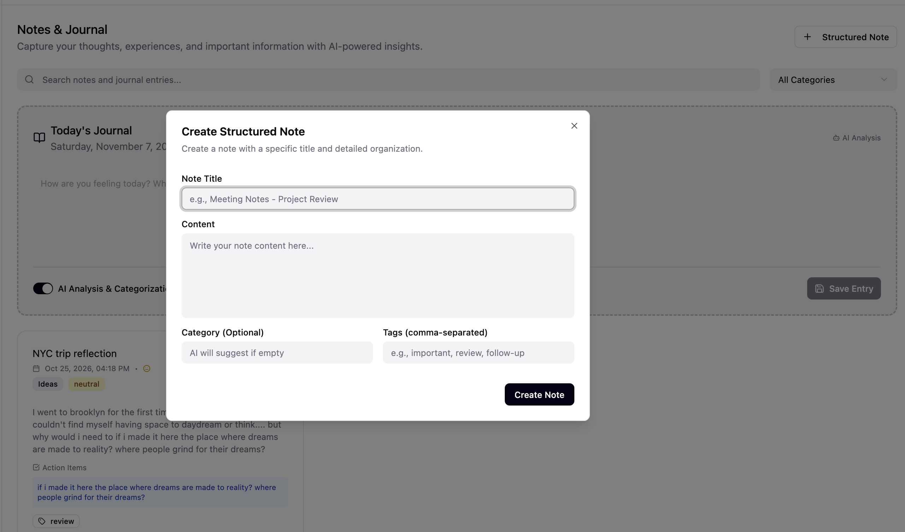
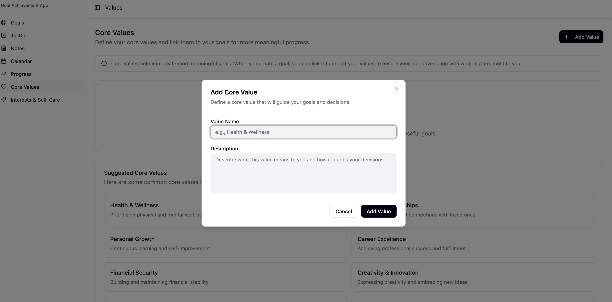
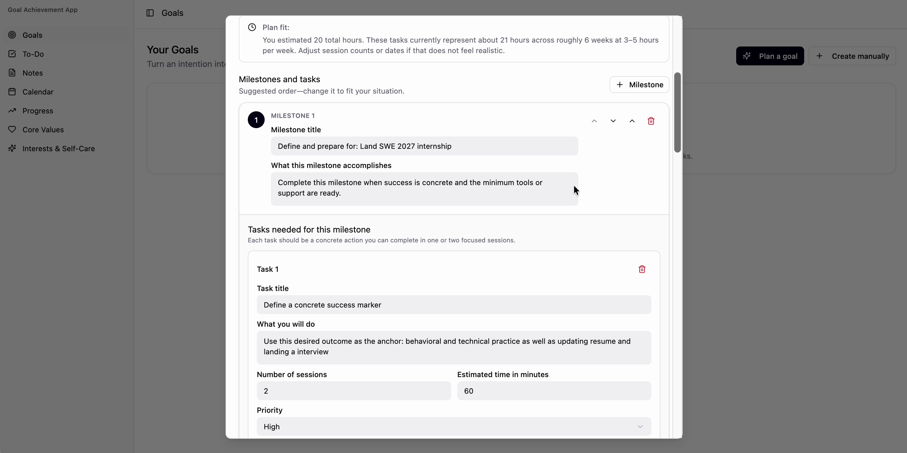

1 · Overview and motivation
My interest in designing technology for wellness began in 2019, when I conducted an AP Research project investigating whether tracking habits such as sleep, diet, anxiety, and mood could encourage adolescents to reflect more critically on their mental health and recognize when additional support might be beneficial.
Years later, I revisited similar questions while developing MoodBirdie. I conducted a small survey with 14 respondents to better understand the challenges people face in managing their well-being, the features they value in wellness tools, and their concerns about adopting these applications.
Several themes were consistent with my earlier research, particularly the importance of habit awareness and the practical barriers people face when incorporating wellness activities into everyday life. Respondents were interested in visualizing habit trends while also raising concerns about time commitment, privacy, and monetization.
These findings reinforced my interest in wellness technology that supports meaningful reflection without creating additional obligations or compromising user autonomy. Although the two investigations were exploratory and took place in different contexts, revisiting these questions connected my early interest in mental health research with my later experience in software engineering and human-centered design.
2 · Research Question
How might a wellness experience support meaningful self-reflection while respecting the user’s autonomy, context, and need for human connection?
3 · MVP Stages
Frame
Revisit an earlier research question while centering reflection, autonomy, and inclusive experience.
Learn
Survey 14 respondents about well-being challenges, valued features, and barriers to adopting wellness tools.
Explore
Use the emerging themes to inform interface concepts and prototype directions in Figma.
4 · Selected core features
These screens highlight a few of MoodBirdie’s core features rather than the full application. A repository link will be added later for people who want to explore the broader experience.



